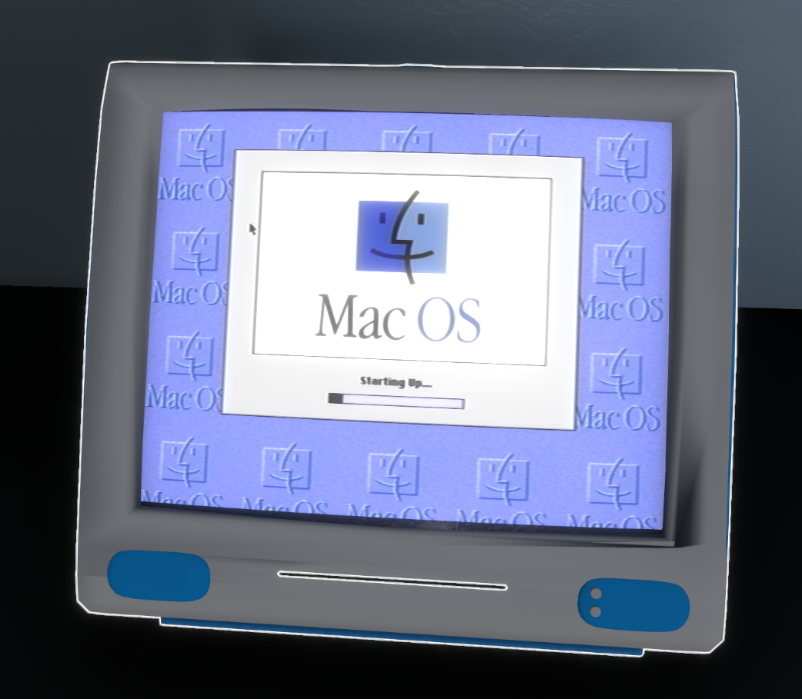

Welcome to the MacOS 8.1 Installation guide for emuVR:
- This guide will help you install MacOS 8.1 for the iMac G3 via DOS.
- You will need the following:
- A valid 68020, 68030, or 68040 compatible Macintosh ROM
- Hard drive file
- Fusion30, which can be downloaded here
Step 1: Adding Mac G3 Custom Media
Add the following code to your Custom_media.txt
MacG3 (CD) = "DOS (CD)|wgc_libretro|Commodore Amiga (CD)"
Step 2: Manually adding Fusion30 to the playlist
For some reason, the gamescanner will not recognize the Fusion30 as a ROM. So, to fix this, we will need to manually add it. However, please note that each time you scan for new games, it will remove Fusion30, and you will need to re-add it. Copy the code below and paste it into your emuvr_playlist.txt file.
Games\G3\FUSION30.zip
FUSION30
DETECT|crc
Step 3: Running Fusion30 ROM
Now that you have properly installed the Fusion30 ROM into EmuVR, you can boot up EmuVR and run the iMac with the Fusion30 ROM inserted. When turned on, you should see the generic DOS Pure start menu. If you have inserted the Fusion30 ROM into the iMac, you should see some options.
Using the arrow keys, navigate to the SETUP.EXE option and press Enter to open it. Once opened, you will be greeted with the Fusion30 Setup.
Now that Fusion30 is fully up and running, use the mouse to navigate to CONFIG and then click on SAVE CONFIG.
Now simply click on Save. There's no need to rename anything, and minimize EmuVR for now.
Step 4: Placing .ROM and HDD files
Now that you have saved a config file, A .zip has created inside the RetroArch/saves folder called FUSION30.pure.zip, navigate over to that location and open the FUSION30.pure.zip, and place the ROM file you have and HDD file into the zip
Step 5: Configuring Fusion30
Okay, now that you have properly installed the ROM file and HDD, we can configure Fusion30. Go back to EmuVR. If you closed it, reopen it and boot the iMac using the Fusion30 ROM. You should be back to the SETUP screen for Fusion30.
Now navigate to the MEMORY section and allocate at least 32MB of RAM. If you are limited on memory, you will need to adjust the core's memory limits in the overrides to 64MB.
Next, navigate over to ROM FILE and select the ROM file you placed in the ZIP.
Now head over to SOUND and using the arrow keys, pick a sound option. I use BLASTER.
Next, navigate over to DEVICES and select the HDD you placed into the ZIP.
Finally, head over to VIDEO and click SELECT. Pick the first option of LAPTOPDR FVD.
Now, if you click on LAUNCH EMULATOR, it should boot into MacOS 8.1.
Now, If you want to you can set the SETUP to be autoboot.